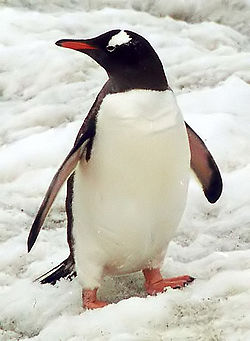

Did you know?
Penguins are a group of aquatic, flightless birds living almost exclusively in the southern hemisphere, especially in Antarctica. Highly adapted for life in the water, penguins have counter shaded dark and white plumage, and their wings have evolved into flippers. Most penguins feed on krill, fish, squid and other forms of sea life caught while swimming underwater. They spend about half of their lives on land and half in the oceans.
Although all penguin species are native to the southern hemisphere, they are not found only in cold climates, such as Antarctica. In fact, only a few species of penguin live so far south. Several species are found in the temperate zone, and one species, the Galapagos Penguin, lives near the equator.
The largest living species is the Emperor Penguin on average adults are about 1.1 m (3 ft 7 in) tall and weigh 35 kg (75 lb) or more. The smallest penguin species is the Little Blue Penguin (Eudyptula minor), also known as the Fairy Penguin, which stands around 40 cm tall (16 in) and weighs 1 kg (2.2 lb). Among extant penguins, larger penguins inhabit colder regions, while smaller penguins are generally found in temperate or even tropical climates (see also Bergmann's Rule). Some prehistoric species attained enormous sizes, becoming as tall or as heavy as an adult human. These were not restricted to Antarctic regions; on the contrary, subantarctic regions harboured high diversity, and at least one giant penguin occurred in a region not quite 2,000 km south of the equator 35 mya, in a climate decidedly warmer than today.